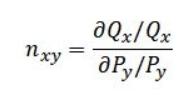

시장이란 수요자와 공급자가 만나 재화 및 용역을 교환하는 추상적인 장소이다. 시장 정의는 경쟁의 정도와 상태를 판단 할 때와 경쟁정책 결정 시에 중요한 역할을 하는데, 같은 시장 내에서 경쟁하던 회사가 합병하게 된다면 독점이 발생할 가능성이 있으며, 이에 따라 시장의 경쟁이 저해될 우려가 있다. 이는 시장 정의에 따라 판단 내용이 변할 수 있으므로 시장 정의를 잘 내리는 것은 중요하다 할 수 있다.
시장 정의의 기준 수요대체성이나 공급대체성을 평가하여 시장 정의의 기준을 나눌 수 있다.

배운 내용인 것 같다... 넘어가자.